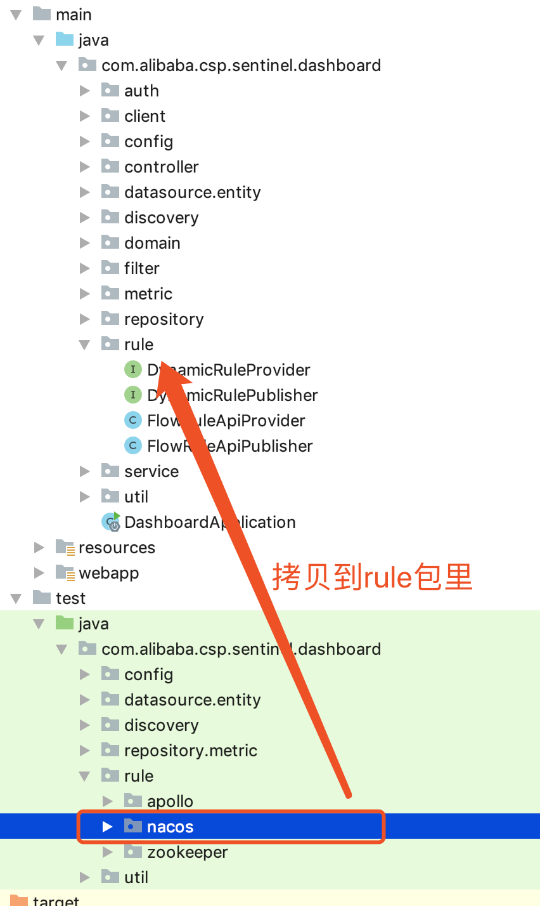

<!DOCTYPE HTML>
<html lang="zh-CN">
<head><meta name="generator" content="Hexo 3.8.0">
    <!--Setting-->
    <meta charset="UTF-8">
    <meta name="viewport" content="width=device-width, user-scalable=no, initial-scale=1.0, maximum-scale=1.0, minimum-scale=1.0">
    <meta http-equiv="X-UA-Compatible" content="IE=Edge,chrome=1">
    <meta http-equiv="Cache-Control" content="no-siteapp">
    <meta http-equiv="Cache-Control" content="no-transform">
    <meta http-equiv="pragma" content="no-cache">
    <meta http-equiv="Cache-Control" content="no-cache, must-revalidate">
    <meta http-equiv="expires" content="Mon Apr 06 2020 02:12:38 GMT+0800 (CST)">
    <meta name="renderer" content="webkit|ie-comp|ie-stand">
    <meta name="apple-mobile-web-app-capable" content="张万众的博客 - 关注Spring Cloud、Docker">
    <meta name="apple-mobile-web-app-status-bar-style" content="black">
    <meta name="format-detection" content="telephone=no,email=no,adress=no">
    <meta name="browsermode" content="application">
    <meta name="screen-orientation" content="portrait">
    <meta name="theme-version" content="1.2.3">
    <meta name="root" content="/">
    
    <!--SEO-->

    <meta name="keywords" content="Spring Cloud,Spring Cloud Alibaba,Sentinel">


    <meta name="description" content="前面，已经为Sentinel实现了 基于拉模式的规则持久化 ，本文来实现基于 推模式的规则持久化。
一、推模式架构图

TIPS
图片来自官方。
引用自 https://github.com/alibaba/Sentinel/wiki/在生产环境中使用-Sentinel

二、原理简述
控制台...">


<meta name="robots" content="all">
<meta name="google" content="all">
<meta name="googlebot" content="all">
<meta name="verify" content="all">
    <!--Title-->


<title>Alibaba Sentinel规则持久化-推模式-手把手教程【基于Nacos】 | 张万众的博客 - 关注Spring Cloud、Docker</title>


    <link rel="alternate" href="../../atom.html" title="张万众的博客 - 关注Spring Cloud、Docker" type="application/atom+xml">


    

    


<link rel="stylesheet" href="../../static/css/bootstrap.min-271a649e0635d6fa1b.css">
<link rel="stylesheet" href="../../static/css/font-awesome.min-ac2bebcf7fb5b26.css">
<link rel="stylesheet" href="../../static/css/style-6f3c140f6eee20e6591da00ec0.css">


    


    <script>
        var _hmt = _hmt || [];
        (function() {
            var hm = document.createElement("script");
            hm.src = "https://hm.baidu.com/hm.js?13766878cde148282622871dd245a973";
            var s = document.getElementsByTagName("script")[0];
            s.parentNode.insertBefore(hm, s);
        })();
    </script>


    

</head>

</html>
<!--[if lte IE 8]>
<style>
    html{ font-size: 1em }
</style>
<![endif]-->
<!--[if lte IE 9]>
<div style="ie">你使用的浏览器版本过低，为了你更好的阅读体验，请更新浏览器的版本或者使用其他现代浏览器，比如Chrome、Firefox、Safari等。</div>
<![endif]-->

<body>
    
    <nav class="main-navigation">
    <div class="container">
        <div class="row clearfix">
            <div class="col-md-12 column">
                <nav class="navbar navbar-default" style="background-color:#fff;border:0;margin-bottom:0" role="navigation">
                    <div class="navbar-header">
                        <button type="button" class="navbar-toggle" data-toggle="collapse" data-target="#navbar-collapse-1">
                            <span class="sr-only">切</span>
                            <span class="icon-bar"></span>
                            <span class="icon-bar"></span>
                            <span class="icon-bar"></span>
                        </button>
                        <a class="logo" href="../../index.html">
                            张万众的博客
                        </a>
                    </div>

                    <div class="collapse navbar-collapse" style="border:0;" id="navbar-collapse-1">
                        <ul class="nav navbar-nav">
                            
                                
                                    <li>
                                        <a href="../../about.html" target="_blank">
                                            <i class="fa fa-user"></i>
                                            关于我
                                        </a>
                                    </li>
                                
                            
                                
                                    <li>
                                        <a href="../../archives.html" target="_blank">
                                            <i class="fa fa-archive"></i>
                                            归档
                                        </a>
                                    </li>
                                
                            
                                
                                    <li class="dropdown">
                                        <a href="#" class="dropdown-toggle" data-toggle="dropdown" data-hover="dropdown">
                                            <i class="fa fa-fire"></i>
                                            系列课程
                                            <strong class="caret"></strong>
                                        </a>
                                        <ul class="dropdown-menu">
                                            
                                                <li>
                                                    <a href="../../docker/00-docker-lession-index.html" target="_blank">
                                                        <i class="fa "></i>
                                                        Docker系列教程
                                                    </a>
                                                </li>
                                            
                                                <li>
                                                    <a href="../../spring-cloud/spring-cloud-index.html" target="_blank">
                                                        <i class="fa "></i>
                                                        Spring Cloud系列教程
                                                    </a>
                                                </li>
                                            
                                                <li>
                                                    <a href="../../spring-boot/spring-boot-index.html" target="_blank">
                                                        <i class="fa "></i>
                                                        Spring Boot系列教程
                                                    </a>
                                                </li>
                                            
                                        </ul>
                                    </li>
                                
                            
                                
                                    <li class="dropdown">
                                        <a href="#" class="dropdown-toggle" data-toggle="dropdown" data-hover="dropdown">
                                            <i class="fa fa-book"></i>
                                            开源书
                                            <strong class="caret"></strong>
                                        </a>
                                        <ul class="dropdown-menu">
                                            
                                                <li>
                                                    <a href="../../books/rocketmq.html" target="_blank">
                                                        <i class="fa fa-rocket"></i>
                                                        RocketMQ开发者指南
                                                    </a>
                                                </li>
                                            
                                                <li>
                                                    <a href="../../books/skywalking.html" target="_blank">
                                                        <i class="fa fa-skyatlas"></i>
                                                        Skywalking 6.2.0中文文档
                                                    </a>
                                                </li>
                                            
                                        </ul>
                                    </li>
                                
                            
                                
                                    <li class="dropdown">
                                        <a href="#" class="dropdown-toggle" data-toggle="dropdown" data-hover="dropdown">
                                            <i class="fa fa-cog"></i>
                                            工具
                                            <strong class="caret"></strong>
                                        </a>
                                        <ul class="dropdown-menu">
                                            
                                                <li>
                                                    <a href="../../tools/markdown2.html" target="_blank">
                                                        <i class="fa "></i>
                                                        微信排版工具2.0
                                                    </a>
                                                </li>
                                            
                                        </ul>
                                    </li>
                                
                            
                        </ul>
                        
                            <form id="search-form" class="navbar-form navbar-right">
                                <div class="form-group input-group">
                                    <input type="text" id="local-search-input" class="form-control" placeholder="搜我...">
                                    <span class="input-group-btn">
                                        <a class="btn btn-default">
                                            <i class="fa fa-search"></i>
                                        </a>
                                    </span>
                                </div>
                                <div id="local-search-result" class="local-search-result-cls"></div>
                            </form>
                        
                    </div>
                </nav>
            </div>
        </div>
    </div>
</nav>

    <a href="javascript:;" target="_blank">
        
    </a>


    <section class="content-wrap">
        <div class="container">
            <div class="row">
                <main class="col-md-8 main-content m-post">
                    

<p id="process"></p>
<article class="post">
    <div class="post-head">
        <h1 id="Alibaba Sentinel规则持久化-推模式-手把手教程【基于Nacos】">
            
                Alibaba Sentinel规则持久化-推模式-手把手教程【基于Nacos】
            
        </h1>
        <div class="post-meta">
    
        <span class="categories-meta fa-wrap">
            <i class="fa fa-folder-open-o"></i>
            <a class="category-link" href="javascript:;">Spring Cloud Alibaba</a>
        </span>
    

    
        <span class="fa-wrap">
            <i class="fa fa-tags"></i>
            <span class="tags-meta">
                
                    <a class="tag-link" href="javascript:;">Sentinel</a> <a class="tag-link" href="javascript:;">Spring Cloud</a> <a class="tag-link" href="javascript:;">Spring Cloud Alibaba</a>
                
            </span>
        </span>
    

    
        
        <span class="fa-wrap">
            <i class="fa fa-clock-o"></i>
            <span class="date-meta">2019/07/16</span>
        </span>
        
            <span class="fa-wrap">
                <i class="fa fa-eye"></i>
                <span id="busuanzi_value_page_pv"></span>
            </span>
        
    
</div>
        
        
    </div>
    
    <div class="post-body post-content" id="post-content">
        
    <div class="toc-article">
        <strong>
            目录
        </strong>
        <div class="toc-content">
            <ol class="toc"><li class="toc-item toc-level-2"><a class="toc-link" href="#一、推模式架构图"><span class="toc-text">一、推模式架构图</span></a></li><li class="toc-item toc-level-2"><a class="toc-link" href="#二、原理简述"><span class="toc-text">二、原理简述</span></a></li><li class="toc-item toc-level-2"><a class="toc-link" href="#三、微服务改造"><span class="toc-text">三、微服务改造</span></a></li><li class="toc-item toc-level-2"><a class="toc-link" href="#四、Sentinel控制台改造"><span class="toc-text">四、Sentinel控制台改造</span></a></li><li class="toc-item toc-level-2"><a class="toc-link" href="#五、编译-amp-启动"><span class="toc-text">五、编译 &amp; 启动</span></a></li><li class="toc-item toc-level-2"><a class="toc-link" href="#六、测试"><span class="toc-text">六、测试</span></a></li><li class="toc-item toc-level-2"><a class="toc-link" href="#七、万里长征才进行了第一步…"><span class="toc-text">七、万里长征才进行了第一步…</span></a></li><li class="toc-item toc-level-2"><a class="toc-link" href="#八、懒人包"><span class="toc-text">八、懒人包</span></a></li><li class="toc-item toc-level-2"><a class="toc-link" href="#九、推模式优缺点分析"><span class="toc-text">九、推模式优缺点分析</span></a></li><li class="toc-item toc-level-2"><a class="toc-link" href="#十、参考文档"><span class="toc-text">十、参考文档</span></a></li></ol>
        </div>
    </div>


        <p>前面，已经为Sentinel实现了 <a href="../sentinel-rules-persistence-pull-mode/index.html">基于拉模式的规则持久化</a> ，本文来实现基于 推模式的规则持久化。</p>
<h2 id="一、推模式架构图"><a href="#一、推模式架构图" class="headerlink" title="一、推模式架构图"></a>一、推模式架构图</h2><p></p>
<blockquote>
<p><strong>TIPS</strong></p>
<p>图片来自官方。</p>
<p>引用自 <code>https://github.com/alibaba/Sentinel/wiki/在生产环境中使用-Sentinel</code></p>
</blockquote>
<h2 id="二、原理简述"><a href="#二、原理简述" class="headerlink" title="二、原理简述"></a>二、原理简述</h2><ul>
<li>控制台推送规则：<ul>
<li>将规则推送到Nacos或其他远程配置中心</li>
<li>Sentinel客户端链接Nacos，获取规则配置；并监听Nacos配置变化，如发生变化，就更新本地缓存（从而让本地缓存总是和Nacos一致）</li>
</ul>
</li>
<li>控制台监听Nacos配置变化，如发生变化就更新本地缓存（从而让控制台本地缓存总是和Nacos一致）</li>
</ul>
<h2 id="三、微服务改造"><a href="#三、微服务改造" class="headerlink" title="三、微服务改造"></a>三、微服务改造</h2><ul>
<li><p>加依赖</p>
<figure class="highlight xml"><table><tr><td class="gutter"><pre><span class="line">1</span><br><span class="line">2</span><br><span class="line">3</span><br><span class="line">4</span><br></pre></td><td class="code"><pre><span class="line"><span class="tag">&lt;<span class="name">dependency</span>&gt;</span></span><br><span class="line">    <span class="tag">&lt;<span class="name">groupId</span>&gt;</span>com.alibaba.csp<span class="tag">&lt;/<span class="name">groupId</span>&gt;</span></span><br><span class="line">    <span class="tag">&lt;<span class="name">artifactId</span>&gt;</span>sentinel-datasource-nacos<span class="tag">&lt;/<span class="name">artifactId</span>&gt;</span></span><br><span class="line"><span class="tag">&lt;/<span class="name">dependency</span>&gt;</span></span><br></pre></td></tr></table></figure>
</li>
<li><p>添加配置</p>
<figure class="highlight yaml"><table><tr><td class="gutter"><pre><span class="line">1</span><br><span class="line">2</span><br><span class="line">3</span><br><span class="line">4</span><br><span class="line">5</span><br><span class="line">6</span><br><span class="line">7</span><br><span class="line">8</span><br><span class="line">9</span><br><span class="line">10</span><br><span class="line">11</span><br><span class="line">12</span><br><span class="line">13</span><br><span class="line">14</span><br><span class="line">15</span><br><span class="line">16</span><br><span class="line">17</span><br><span class="line">18</span><br><span class="line">19</span><br><span class="line">20</span><br><span class="line">21</span><br><span class="line">22</span><br><span class="line">23</span><br><span class="line">24</span><br><span class="line">25</span><br><span class="line">26</span><br><span class="line">27</span><br><span class="line">28</span><br><span class="line">29</span><br><span class="line">30</span><br><span class="line">31</span><br><span class="line">32</span><br><span class="line">33</span><br><span class="line">34</span><br><span class="line">35</span><br><span class="line">36</span><br><span class="line">37</span><br></pre></td><td class="code"><pre><span class="line"><span class="attr">spring:</span></span><br><span class="line"><span class="attr">  cloud:</span></span><br><span class="line"><span class="attr">    sentinel:</span></span><br><span class="line"><span class="attr">      datasource:</span></span><br><span class="line">        <span class="comment"># 名称随意</span></span><br><span class="line"><span class="attr">        flow:</span></span><br><span class="line"><span class="attr">          nacos:</span></span><br><span class="line"><span class="attr">            server-addr:</span> <span class="attr">localhost:8848</span></span><br><span class="line"><span class="attr">            dataId:</span> <span class="string">$&#123;spring.application.name&#125;-flow-rules</span></span><br><span class="line"><span class="attr">            groupId:</span> <span class="string">SENTINEL_GROUP</span></span><br><span class="line">            <span class="comment"># 规则类型，取值见：</span></span><br><span class="line">            <span class="comment"># org.springframework.cloud.alibaba.sentinel.datasource.RuleType</span></span><br><span class="line"><span class="attr">            rule-type:</span> <span class="string">flow</span></span><br><span class="line"><span class="attr">        degrade:</span></span><br><span class="line"><span class="attr">          nacos:</span></span><br><span class="line"><span class="attr">            server-addr:</span> <span class="attr">localhost:8848</span></span><br><span class="line"><span class="attr">            dataId:</span> <span class="string">$&#123;spring.application.name&#125;-degrade-rules</span></span><br><span class="line"><span class="attr">            groupId:</span> <span class="string">SENTINEL_GROUP</span></span><br><span class="line"><span class="attr">            rule-type:</span> <span class="string">degrade</span></span><br><span class="line"><span class="attr">        system:</span></span><br><span class="line"><span class="attr">          nacos:</span></span><br><span class="line"><span class="attr">            server-addr:</span> <span class="attr">localhost:8848</span></span><br><span class="line"><span class="attr">            dataId:</span> <span class="string">$&#123;spring.application.name&#125;-system-rules</span></span><br><span class="line"><span class="attr">            groupId:</span> <span class="string">SENTINEL_GROUP</span></span><br><span class="line"><span class="attr">            rule-type:</span> <span class="string">system</span></span><br><span class="line"><span class="attr">        authority:</span></span><br><span class="line"><span class="attr">          nacos:</span></span><br><span class="line"><span class="attr">            server-addr:</span> <span class="attr">localhost:8848</span></span><br><span class="line"><span class="attr">            dataId:</span> <span class="string">$&#123;spring.application.name&#125;-authority-rules</span></span><br><span class="line"><span class="attr">            groupId:</span> <span class="string">SENTINEL_GROUP</span></span><br><span class="line"><span class="attr">            rule-type:</span> <span class="string">authority</span></span><br><span class="line"><span class="attr">        param-flow:</span></span><br><span class="line"><span class="attr">          nacos:</span></span><br><span class="line"><span class="attr">            server-addr:</span> <span class="attr">localhost:8848</span></span><br><span class="line"><span class="attr">            dataId:</span> <span class="string">$&#123;spring.application.name&#125;-param-flow-rules</span></span><br><span class="line"><span class="attr">            groupId:</span> <span class="string">SENTINEL_GROUP</span></span><br><span class="line"><span class="attr">            rule-type:</span> <span class="string">param-flow</span></span><br></pre></td></tr></table></figure>
</li>
</ul>
<h2 id="四、Sentinel控制台改造"><a href="#四、Sentinel控制台改造" class="headerlink" title="四、Sentinel控制台改造"></a>四、Sentinel控制台改造</h2><blockquote>
<p>控制台改造主要是为规则实现</p>
<ul>
<li>DynamicRuleProvider：从Nacos上读取配置</li>
<li>DynamicRulePublisher：将规则推送到Nacos上</li>
</ul>
</blockquote>
<ul>
<li><p>修改pom.xml，找到：</p>
<figure class="highlight xml"><table><tr><td class="gutter"><pre><span class="line">1</span><br><span class="line">2</span><br><span class="line">3</span><br><span class="line">4</span><br><span class="line">5</span><br><span class="line">6</span><br></pre></td><td class="code"><pre><span class="line"><span class="comment">&lt;!-- for Nacos rule publisher sample --&gt;</span></span><br><span class="line">  <span class="tag">&lt;<span class="name">dependency</span>&gt;</span></span><br><span class="line">    <span class="tag">&lt;<span class="name">groupId</span>&gt;</span>com.alibaba.csp<span class="tag">&lt;/<span class="name">groupId</span>&gt;</span></span><br><span class="line">    <span class="tag">&lt;<span class="name">artifactId</span>&gt;</span>sentinel-datasource-nacos<span class="tag">&lt;/<span class="name">artifactId</span>&gt;</span></span><br><span class="line">    <span class="tag">&lt;<span class="name">scope</span>&gt;</span>test<span class="tag">&lt;/<span class="name">scope</span>&gt;</span></span><br><span class="line">  <span class="tag">&lt;/<span class="name">dependency</span>&gt;</span></span><br></pre></td></tr></table></figure>
<p>将 <code>&lt;scope&gt;test&lt;/scope&gt;</code> 这一行注释掉，即改为如下：</p>
<figure class="highlight xml"><table><tr><td class="gutter"><pre><span class="line">1</span><br><span class="line">2</span><br><span class="line">3</span><br><span class="line">4</span><br><span class="line">5</span><br><span class="line">6</span><br></pre></td><td class="code"><pre><span class="line"><span class="comment">&lt;!-- for Nacos rule publisher sample --&gt;</span></span><br><span class="line"><span class="tag">&lt;<span class="name">dependency</span>&gt;</span></span><br><span class="line">  <span class="tag">&lt;<span class="name">groupId</span>&gt;</span>com.alibaba.csp<span class="tag">&lt;/<span class="name">groupId</span>&gt;</span></span><br><span class="line">  <span class="tag">&lt;<span class="name">artifactId</span>&gt;</span>sentinel-datasource-nacos<span class="tag">&lt;/<span class="name">artifactId</span>&gt;</span></span><br><span class="line">  <span class="comment">&lt;!--&lt;scope&gt;test&lt;/scope&gt;--&gt;</span></span><br><span class="line"><span class="tag">&lt;/<span class="name">dependency</span>&gt;</span></span><br></pre></td></tr></table></figure>
</li>
</ul>
<ul>
<li><p>找到 <code>sentinel-dashboard/src/test/java/com/alibaba/csp/sentinel/dashboard/rule/nacos</code>目录，将整个目录拷贝到 <code>sentinel-dashboard/src/main/java/com/alibaba/csp/sentinel/dashboard/rule/nacos</code>，如图：</p>
<p></p>
</li>
<li><p>修改 <code>com.alibaba.csp.sentinel.dashboard.controller.v2.FlowControllerV2</code> ，找到</p>
<figure class="highlight java"><table><tr><td class="gutter"><pre><span class="line">1</span><br><span class="line">2</span><br><span class="line">3</span><br><span class="line">4</span><br><span class="line">5</span><br><span class="line">6</span><br></pre></td><td class="code"><pre><span class="line"><span class="meta">@Autowired</span></span><br><span class="line"><span class="meta">@Qualifier</span>(<span class="string">"flowRuleDefaultProvider"</span>)</span><br><span class="line"><span class="keyword">private</span> DynamicRuleProvider&lt;List&lt;FlowRuleEntity&gt;&gt; ruleProvider;</span><br><span class="line"><span class="meta">@Autowired</span></span><br><span class="line"><span class="meta">@Qualifier</span>(<span class="string">"flowRuleDefaultPublisher"</span>)</span><br><span class="line"><span class="keyword">private</span> DynamicRulePublisher&lt;List&lt;FlowRuleEntity&gt;&gt; rulePublisher;</span><br></pre></td></tr></table></figure>
<p>修改为：</p>
<figure class="highlight java"><table><tr><td class="gutter"><pre><span class="line">1</span><br><span class="line">2</span><br><span class="line">3</span><br><span class="line">4</span><br><span class="line">5</span><br><span class="line">6</span><br></pre></td><td class="code"><pre><span class="line"><span class="meta">@Autowired</span></span><br><span class="line"><span class="meta">@Qualifier</span>(<span class="string">"flowRuleNacosProvider"</span>)</span><br><span class="line"><span class="keyword">private</span> DynamicRuleProvider&lt;List&lt;FlowRuleEntity&gt;&gt; ruleProvider;</span><br><span class="line"><span class="meta">@Autowired</span></span><br><span class="line"><span class="meta">@Qualifier</span>(<span class="string">"flowRuleNacosPublisher"</span>)</span><br><span class="line"><span class="keyword">private</span> DynamicRulePublisher&lt;List&lt;FlowRuleEntity&gt;&gt; rulePublisher;</span><br></pre></td></tr></table></figure>
</li>
<li><p>修改 <code>sentinel-dashboard/src/main/webapp/resources/app/scripts/directives/sidebar/sidebar.html</code>，找到：</p>
<figure class="highlight html"><table><tr><td class="gutter"><pre><span class="line">1</span><br><span class="line">2</span><br><span class="line">3</span><br><span class="line">4</span><br></pre></td><td class="code"><pre><span class="line"><span class="comment">&lt;!--&lt;li ui-sref-active="active"&gt;--&gt;</span></span><br><span class="line">  <span class="comment">&lt;!--&lt;a ui-sref="dashboard.flow(&#123;app: entry.app&#125;)"&gt;--&gt;</span></span><br><span class="line">    <span class="comment">&lt;!--&lt;i class="glyphicon glyphicon-filter"&gt;&lt;/i&gt;&amp;nbsp;&amp;nbsp;流控规则 V1&lt;/a&gt;--&gt;</span></span><br><span class="line"><span class="comment">&lt;!--&lt;/li&gt;--&gt;</span></span><br></pre></td></tr></table></figure>
<p>把注释解开，即改为：</p>
<figure class="highlight html"><table><tr><td class="gutter"><pre><span class="line">1</span><br><span class="line">2</span><br><span class="line">3</span><br><span class="line">4</span><br></pre></td><td class="code"><pre><span class="line"><span class="tag">&lt;<span class="name">li</span> <span class="attr">ui-sref-active</span>=<span class="string">"active"</span>&gt;</span></span><br><span class="line">  <span class="tag">&lt;<span class="name">a</span> <span class="attr">ui-sref</span>=<span class="string">"dashboard.flow(&#123;app: entry.app&#125;)"</span>&gt;</span></span><br><span class="line">    <span class="tag">&lt;<span class="name">i</span> <span class="attr">class</span>=<span class="string">"glyphicon glyphicon-filter"</span>&gt;</span><span class="tag">&lt;/<span class="name">i</span>&gt;</span>&amp;nbsp;&amp;nbsp;流控规则 V1<span class="tag">&lt;/<span class="name">a</span>&gt;</span></span><br><span class="line"><span class="tag">&lt;/<span class="name">li</span>&gt;</span></span><br></pre></td></tr></table></figure>
<p>齐活儿啦！终于把流控规则改造成推模式持久化啦！</p>
</li>
</ul>
<h2 id="五、编译-amp-启动"><a href="#五、编译-amp-启动" class="headerlink" title="五、编译 &amp; 启动"></a>五、编译 &amp; 启动</h2><ul>
<li>执行 <code>mvn clean package -DskipTests</code></li>
<li>在项目的 <code>target</code> 目录找到<code>sentinel-dashboard.jar</code> ，执行 <code>java -jar sentinel-dashboard.jar</code> 启动控制台。</li>
</ul>
<h2 id="六、测试"><a href="#六、测试" class="headerlink" title="六、测试"></a>六、测试</h2><ul>
<li>测试1：用Sentinel控制台【菜单栏的 <code>流控规则 V1</code> 】推送流控规则，规则会存储到Nacos；</li>
<li>测试2：直接在Nacos上修改流控规则，然后刷新Sentinel控制台，控制台上的显示也会被修改；</li>
<li>测试3：重启Sentinel控制台，并重启微服务；刷新控制台，可以发现规则依然存在。</li>
</ul>
<h2 id="七、万里长征才进行了第一步…"><a href="#七、万里长征才进行了第一步…" class="headerlink" title="七、万里长征才进行了第一步…"></a>七、万里长征才进行了第一步…</h2><p>以上，其实只实现了流控规则的持久化。Sentinel有若干种规则，例如降级规则、系统规则、授权规则、热点规则等，都需要使用类似的方式，修改 <code>com.alibaba.csp.sentinel.dashboard.controller</code> 包中对应的Controller，才能实现持久化。</p>
<h2 id="八、懒人包"><a href="#八、懒人包" class="headerlink" title="八、懒人包"></a>八、懒人包</h2><p>笔者已经基于Sentinel Dashboard 1.6.2做了修改，为如下规则提供了持久化：</p>
<ul>
<li>流控规则</li>
<li>降级规则</li>
<li>系统规则</li>
<li>授权规则</li>
<li>参数热点规则</li>
</ul>
<p>GitHub地址：<a href="javascript:;" target="_blank" rel="noopener">https://github.com/eacdy/Sentinel-Dashboard-Nacos</a> ，使用1.6.2-NACOS分支即可。</p>
<p>使用说明：<a href="javascript:;" target="_blank" rel="noopener">https://github.com/eacdy/Sentinel-Dashboard-Nacos/releases</a></p>
<p>修改的文件：</p>
<p></p>
<h2 id="九、推模式优缺点分析"><a href="#九、推模式优缺点分析" class="headerlink" title="九、推模式优缺点分析"></a>九、推模式优缺点分析</h2><ul>
<li>优点<ul>
<li>规则持久化</li>
<li>一致性好</li>
<li>性能优秀</li>
</ul>
</li>
<li>改动多、并且麻烦</li>
<li>引入额外的依赖（Nacos）</li>
</ul>
<h2 id="十、参考文档"><a href="#十、参考文档" class="headerlink" title="十、参考文档"></a>十、参考文档</h2><figure class="highlight plain"><table><tr><td class="gutter"><pre><span class="line">1</span><br></pre></td><td class="code"><pre><span class="line">https://github.com/alibaba/Sentinel/wiki/在生产环境中使用-Sentinel#pull模式</span><br></pre></td></tr></table></figure>
        <h2>相关文章</h2><ul><li><a href="../sentinel-configuration-rule/index.html">Alibaba Sentinel 规则参数总结</a></li><li><a href="../../spring-cloud-alibaba-migration/spring-cloud-alibaba-2/index.html">Spring Cloud Alibaba迁移指南2：一行代码从Hystrix迁移到Sentinel</a></li><li><a href="../sentinel-config-properties/index.html">Alibaba Sentinel 配置项总结</a></li><li><a href="../05-sentinel/index.html">Spring Cloud Alibaba系列教程-05-Sentinel入门与整合</a></li><li><a href="../sentinel-resoure-annotation/index.html">SentinelResource注解 属性总结</a></li></ul>
    </div>
    
    <div class="post-footer">
        <div class="col-sm-10">
            <div>
                <b>本文链接</b>：<a href="" target="_blank">Alibaba Sentinel规则持久化-推模式-手把手教程【基于Nacos】</a>
            </div>
            <div>
                
                    转载声明：本博客由张万众创作，采用 <a href="javascript:;" target="_blank"> CC BY 3.0 CN </a> 许可协议。可自由转载、引用，但需署名作者且注明文章出处。如转载至微信公众号，请在文末添加作者公众号二维码。
                
            </div>
            <div>
                
            </div>
        </div>
        <div class="col-sm-2">
            
        </div>
    </div>
</article>

<div class="article-nav prev-next-wrap clearfix">
    
        <a target="_blank" href="../sentinel-config-properties/index.html" class="pre-post btn btn-default" title="Alibaba Sentinel 配置项总结">
            <i class="fa fa-angle-left fa-fw"></i><span class="hidden-lg">上一篇</span>
            <span class="hidden-xs">Alibaba Sentinel 配置项总结</span>
        </a>
    
    
        <a target="_blank" href="../sentinel-rules-persistence-pull-mode/index.html" class="next-post btn btn-default" title="Alibaba Sentinel 规则持久化-拉模式-手把手教程【基于文件】">
            <span class="hidden-lg">下一篇</span>
            <span class="hidden-xs">Alibaba Sentinel 规则持久化-拉模式-手把手教程【基于文件】</span><i class="fa fa-angle-right fa-fw"></i>
        </a>
    
</div>


    <div id="comments">
        
   <p>评论系统未开启，无法评论！</p>

    </div>


                </main>
                
    <aside class="col-md-4 sidebar">
        
        <div class="widget about-me">
    <div class="row">
        <div class="col-md-5">
            
        </div>
        <div class="col-md-7">
            <a class="series-a" href="javascript:void(0)">公众号</a>
            <ul>
                <li>• 技术干货推送</li>
                <li>• 免费资料领取</li>
                <li><b>• 扫码领取更多惊喜</b></li>
            </ul>
        </div>
    </div>
    
        <div class="row">
            <div class="col-md-5">
                
            </div>
            <div class="col-md-7">
                <a class="series-a" href="javascript:void(0)">小程序</a>
                <ul>
                    <li>• 原创笔记</li>
                    <li>• 独家心法</li>
                    <li><b>• 扫码领取</b></li>
                </ul>
            </div>
        </div>
    
</div>


        
        
    <div class="ad">
        <div class="row">
            <div class="col-md-12">
                <a href="javascript:;" rel="nofollow" target="_blank">
                    
                </a>
            </div>
        </div>
    </div>


        
        <div class="widget">
    <div class="row">
        <div class="col-md-3">
            
        </div>
        <div class="col-md-9">
            <a class="series-a" target="_blank" href="../../spring-cloud/spring-cloud-index.html">Spring Cloud系列教程</a>
            <p>全面、通俗易懂的Spring Cloud教程</p>
        </div>
    </div>
    <div class="row">
        <div class="col-md-3">
            
        </div>
        <div class="col-md-9">
            <a class="series-a" target="_blank" href="javascript:;">Spring Cloud Alibaba视频教程</a>
            <p>全网唯一，你值得拥有</p>
        </div>
    </div>
    <div class="row">
        <div class="col-md-3">
            
        </div>
        <div class="col-md-9">
            <a class="series-a" target="_blank" href="../../docker/00-docker-lession-index.html">Docker系列教程</a>
            <p>Docker系列</p>
        </div>
    </div>
    <div class="row">
        <div class="col-md-3">
            
        </div>
        <div class="col-md-9">
            <a class="series-a" target="_blank" href="../../spring-boot/spring-boot-index.html">Spring Boot系列教程</a>
            <p>Boot是基石...</p>
        </div>
    </div>
</div>


        
        
    <div class="widget">
        <h3 class="title">分类</h3>
        <ul class="category-list"><li class="category-list-item"><a class="category-list-link" href="javascript:;"><i class="fa" aria-hidden="true">Docker</i></a><span class="category-list-count">31</span></li><li class="category-list-item"><a class="category-list-link" href="javascript:;"><i class="fa" aria-hidden="true">Kubernetes</i></a><span class="category-list-count">2</span></li><li class="category-list-item"><a class="category-list-link" href="javascript:;"><i class="fa" aria-hidden="true">Spring Boot</i></a><span class="category-list-count">6</span></li><li class="category-list-item"><a class="category-list-link" href="javascript:;"><i class="fa" aria-hidden="true">Spring Cloud</i></a><span class="category-list-count">94</span></li><li class="category-list-item"><a class="category-list-link current" href="javascript:;"><i class="fa" aria-hidden="true">Spring Cloud Alibaba</i></a><span class="category-list-count">16</span></li><li class="category-list-item"><a class="category-list-link" href="javascript:;"><i class="fa" aria-hidden="true">Spring Cloud Stream</i></a><span class="category-list-count">1</span></li><li class="category-list-item"><a class="category-list-link" href="../../categories/其他/index.html"><i class="fa" aria-hidden="true">其他</i></a><span class="category-list-count">13</span></li><li class="category-list-item"><a class="category-list-link" href="../../categories/安装教程/index.html"><i class="fa" aria-hidden="true">安装教程</i></a><span class="category-list-count">7</span></li><li class="category-list-item"><a class="category-list-link" href="../../categories/工作/index.html"><i class="fa" aria-hidden="true">工作</i></a><span class="category-list-count">20</span></li></ul>
    </div>


        
        
        
        

        
    </aside>

            </div>
        </div>
    </section>
    <footer class="main-footer">
    <div class="container">
        <div class="row">
        </div>
    </div>
</footer>

<a id="back-to-top" class="icon-btn hide">
	<i class="fa fa-chevron-up"></i>
</a>


    <div class="copyright">
    <div class="container">
        <div class="row">
            <div class="col-sm-12">
                <div class="busuanzi">
    
        访问量:
        <strong id="busuanzi_value_site_pv">
            <i class="fa fa-spinner fa-spin"></i>
        </strong>
        &nbsp; | &nbsp;
        访客数:
        <strong id="busuanzi_value_site_uv">
            <i class="fa fa-spinner fa-spin"></i>
        </strong>
        &nbsp; <strong>Since 2018-12-26</strong>
    
</div>

            </div>
            <div class="col-sm-12">
                <span>Copyright &copy; 2017
                </span> |
                <span>
                    Powered by <a href="javascript:;" class="copyright-links" target="_blank" rel="nofollow">Hexo</a>
                </span> |
                <span>
                    Theme by <a href="javascript:;" class="copyright-links" target="_blank" rel="nofollow">ITMuch</a>
                </span>
            </div>
        </div>
    </div>
</div>

<script src="../../static/js/jquery.min.js"></script>
<script src="../../static/js/bootstrap.min.js"></script>
<script src="../../static/js/bootstrap-hover-dropdown.min.js"></script>

    <script src="../../static/js/search-3f4fbd0557c869ca0516ebb5f.js"></script>


    <script async="" src="../../static/js/busuanzi.pure.mini.js"></script>


<script src="../../static/js/app-da10bb3b2ae5c8348d2bd2cc3faf.js"></script>


</body>
